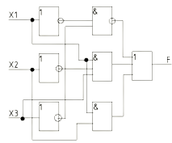
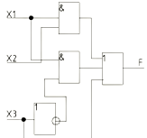

Три вида представления
логической функции.
логической функции.
План:
1) Переход от логической формулы к логической схеме.
2) Переход от логической схемы к логической формуле.
3) Переход от логической формулы к таблице истинности.
4) Переход от таблицы истинности к логической формуле.
5) Тождественность функций.
Существует три вида представления логической функции:
Логическая формула (ЛФ).
Логическая схема (ЛС).
Таблица истинности (ТИ).
Переход от логической формулы к логической схеме происходит по последующим шагам:
1.В логической формуле находим короткие инверсии и заменяем их в схеме элементом «НЕ» (инверсия).
2.В формуле находим конъюнкцию (логическое умножение) и заменяем в схеме элементом «И». Сколько в конъюнкции множителей, столько и входов в элементе «И».
3.Если есть длинная инверсия над конъюнкцией, то рисуем кружочек на выходе у элемента «И».
4.Ищем в формуле дизъюнкцию и заменяем в схеме элементом «ИЛИ». Сколько слагаемых в дизъюнкции, столько и входов у этого элемента «ИЛИ». Если над дизъюнкцией есть длинная инверсия, то ставим кружочек на выходе этого элемента «ИЛИ»
5.Одинаковые элементы рисуются друг под другом.
Пример: по логической формуле построить логическую схему.
F=((X1) ̅&(X3) ̅ ) ̅VX1&(X2) ̅&X3VX1&X2
1) Переход от логической формулы к логической схеме.
2) Переход от логической схемы к логической формуле.
3) Переход от логической формулы к таблице истинности.
4) Переход от таблицы истинности к логической формуле.
5) Тождественность функций.
Существует три вида представления логической функции:
Логическая формула (ЛФ).
Логическая схема (ЛС).
Таблица истинности (ТИ).
Переход от логической формулы к логической схеме.
1.В логической формуле находим короткие инверсии и заменяем их в схеме элементом «НЕ» (инверсия).
2.В формуле находим конъюнкцию (логическое умножение) и заменяем в схеме элементом «И». Сколько в конъюнкции множителей, столько и входов в элементе «И».
3.Если есть длинная инверсия над конъюнкцией, то рисуем кружочек на выходе у элемента «И».
4.Ищем в формуле дизъюнкцию и заменяем в схеме элементом «ИЛИ». Сколько слагаемых в дизъюнкции, столько и входов у этого элемента «ИЛИ». Если над дизъюнкцией есть длинная инверсия, то ставим кружочек на выходе этого элемента «ИЛИ»
5.Одинаковые элементы рисуются друг под другом.
Пример: по логической формуле построить логическую схему.
F=((X1) ̅&(X3) ̅ ) ̅VX1&(X2) ̅&X3VX1&X2

F=X1&X2&X3VX1&X3VX2&X3
